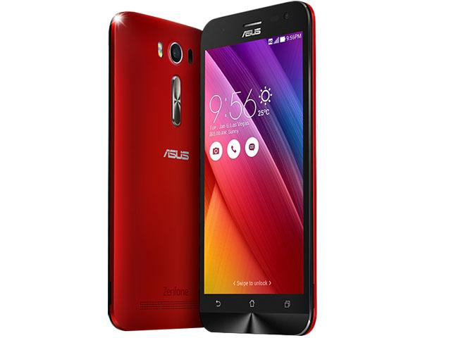

Asus Zenfone 2 Laser (Z00ED)
Asus Zenfone 2 Laser (Z00ED)

Model wypuszczony na rynek w 2015 3 kwartał.
Jego waga wynosi 140.00g.
Wyświetlacz to IPS TFT o rozdzielczości 720x1280 posiadający 16,7 miliona kolorów.
Wyposażony jest on w Corning Gorilla Glass 4.
Jego fabryczna bateria wynosi 2070 mAh i jest to litowo-polimerowa.
Do wyboru pamięci do użytku osobistego były 8 i 16 GB.
Pamięć operacyjna wynosi 2GB.